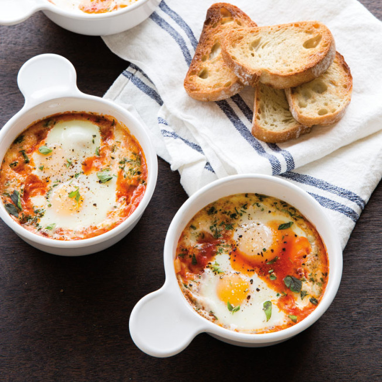

Uova al Purgatorio
(with a twist)

Description
A perfect dish for a Sunday morning! Baked eggs in a tomato sauce, with Kalamata olives and
chunks of salami. Finished off with mozzarella and basil. Served with freshly made
garlic bread. Breakfast doesn't get much better than this!
Ingredients
- 1 14-ounce can San Marzano tomatoes, crushed by hand and mixed with half
of the sauce
- 1/2 cup chopped Kalamata olives
- 1/2 cup diced salami
- 3 tablespoons olive oil, plus extra for drizzling
- 1 cup torn fresh mozzarella
- 4 large eggs
- 1/2 cup fresh basil leaves, torn
- 2 cloves garlic
- Kosher salt and freshly ground black pepper
- Grated pecorino romano cheese, for sprinkling
- Garlic bread to serve
Steps
- Preheat the oven to 350 degrees F.
- In a medium cast-iron pan or braiser, bring the tomatoes and sauce, olives, salami and
olive oil to a simmer over medium-high heat. Season with pepper and salt if necessary
(the salami and the olives can be salty).
- Arrange the mozzarella on top, make 4 wells and crack an egg into each. Season the eggs
with salt and pepper. Sprinkle the basil on top and drizzle with more olive oil. Transfer
the pan to the oven and bake until the eggs are set but still runny, about 20 minutes.
- Serve with garlic bread, sprinkled with Pecorino.